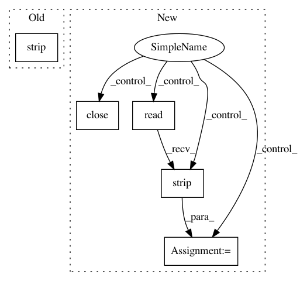

891e580bc8e66d0d81c2334c507cd1b10f93cbc2,pynets/utils.py,,reorient_dwi,#Any#Any#Any#,897
Before Change
os.system(cmd)
bvecs_mat[:,1] = -bvecs_mat[:,1]
cmd = "fslorient -getqform " + dwi_prep_PA
qform = os.popen(cmd).read().strip("\n")
dwi_prep = dwi_prep_PA
reoriented = True
// Inferior-Superior Reorientation
if float(qform.split(" ")[:-1][10]) <= 0:
After Change
bvecs_mat[:,1] = -bvecs_mat[:,1]
cmd = "fslorient -getqform " + dwi_prep_PA
cmd_run = os.popen(cmd)
qform = cmd_run.read().strip("\n")
cmd_run.close()
dwi_prep = dwi_prep_PA
// Inferior-Superior Reorientation
if float(qform.split(" ")[:-1][10]) <= 0:
dwi_prep_IS = "{}/dwi_reor_IS.nii.gz".format(out_dir)
print("Reorienting I-S flip (dwi)...")
cmd = "fslswapdim " + dwi_prep + " -x y -z " + dwi_prep_IS
os.system(cmd)
bvecs_mat[:,2] = -bvecs_mat[:,2]
dwi_prep = dwi_prep_IS
bvecs_mat[:, 0] = -bvecs_mat[:, 0]
cmd = "fslorient -forceradiological " + dwi_prep
os.system(cmd)
np.savetxt(bvecs, bvecs_mat)
else:
print("Radiological (dwi)...")
// Posterior-Anterior Reorientation
if float(qform.split(" ")[:-1][5]) <= 0:
dwi_prep_PA = "{}/dwi_reor_PA.nii.gz".format(out_dir)
print("Reorienting P-A flip (dwi)...")
cmd = "fslswapdim " + dwi_prep + " -x -y z " + dwi_prep_PA
os.system(cmd)
bvecs_mat[:,1] = -bvecs_mat[:,1]
cmd = "fslorient -getqform " + dwi_prep_PA
cmd_run = os.popen(cmd)
qform = cmd_run.read().strip("\n")
cmd_run.close()
dwi_prep = dwi_prep_PA
reoriented = True
// Inferior-Superior Reorientation
if float(qform.split(" ")[:-1][10]) <= 0:
In pattern: SUPERPATTERN
Frequency: 3
Non-data size: 5
Instances
Project Name: dPys/PyNets
Commit Name: 891e580bc8e66d0d81c2334c507cd1b10f93cbc2
Time: 2019-06-09
Author: dpisner@utexas.edu
File Name: pynets/utils.py
Class Name:
Method Name: reorient_dwi
Project Name: PyMVPA/PyMVPA
Commit Name: 96353ee672e68c88bf940582cb832f7ffb3e6a3d
Time: 2011-01-11
Author: michael.hanke@gmail.com
File Name: mvpa/__init__.py
Class Name:
Method Name:
Project Name: dPys/PyNets
Commit Name: 891e580bc8e66d0d81c2334c507cd1b10f93cbc2
Time: 2019-06-09
Author: dpisner@utexas.edu
File Name: pynets/utils.py
Class Name:
Method Name: reorient_img